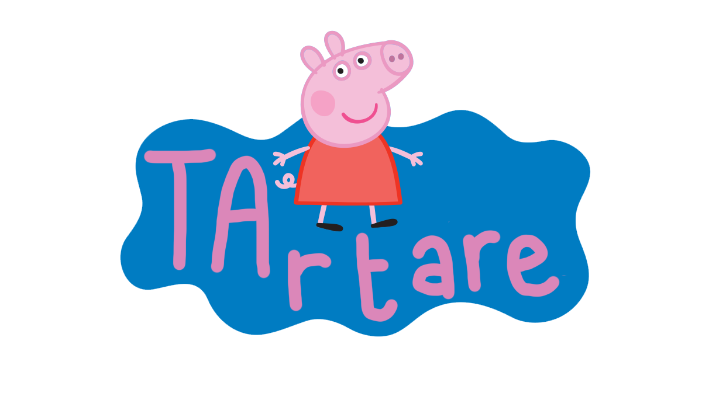
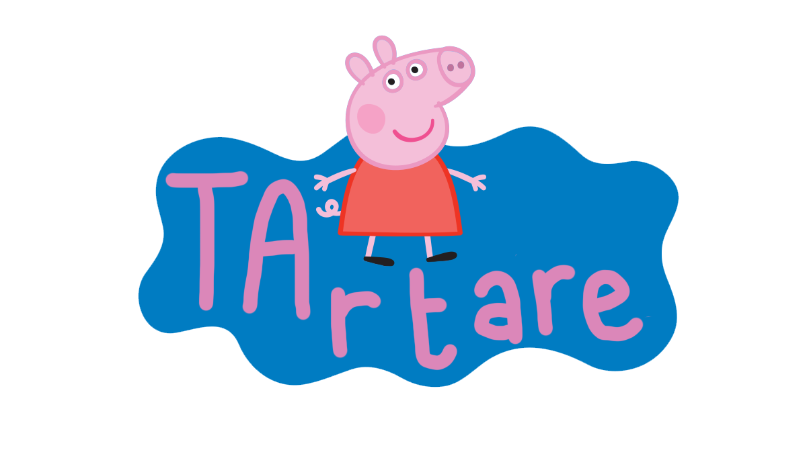

Bienvenue chez Tartare
Nous sommes une association passionnée par la charcuterie, le saucisson et les moments partagés autour d'une bonne tranche. Notre but : promouvoir le savoir-faire, organiser des dégustations et rassembler les amoureux de la viande dans un esprit convivial et festif.
Rejoins-nous pour des dégustations bien gourmandes.
Événements
Consulte notre calendrier pour découvrir nos prochaines dégustations, ateliers d'affinage et stands lors des marchés locaux.
- Décembre 2025 : Commande de Saucissons
- 6 Janvier 2026 : TarTAre x Tanin x Cantal
- Janvier 2026 : Passation
Événements passés
Foire du terroir

À propos
L'Association des Viandards Tartare regroupe des étudiants et alumni passionnés par la charcuterie artisanale. Nous valorisons les producteurs locaux et les recettes traditionnelles. Notre fonctionnement est basé sur la convivialité, le partage et l'amour du bon produit.
Le mandat

Commander
Pour commander nos délicieux produits, remplissez notre formulaire de commande :
Contact
Pour adhérer, proposer un partenariat ou organiser une dégustation, remplissez notre formulaire :